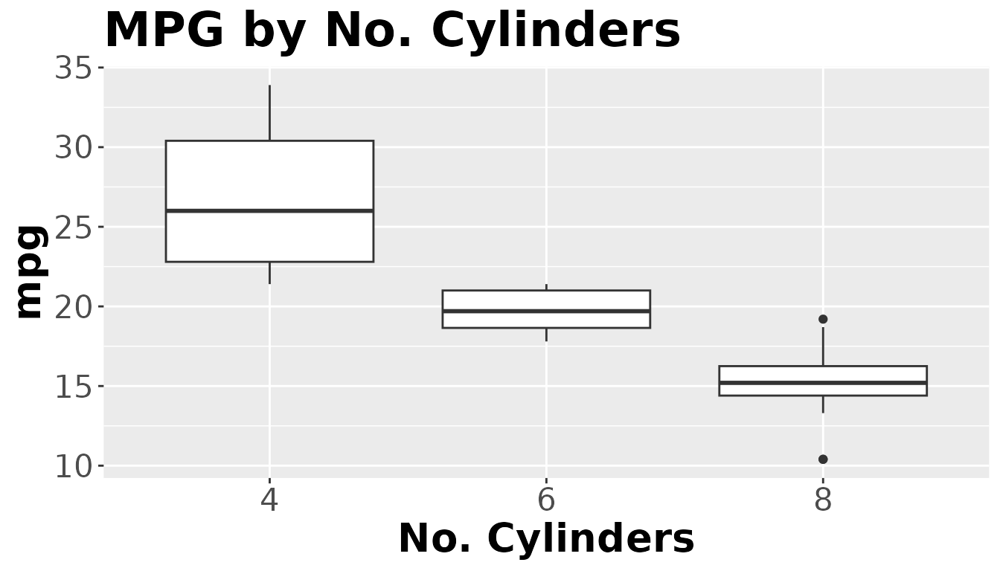

grp1_project_package-vignette
grp1_project_package-vignette.RmdIntroduction to grp1ProjectPackage
The goal of grp1ProjectPackage is to provide functions for data preprocessing for exploratory data analyses. The grp1ProjectPackage simplifies the following tasks.:
- Loading data from a URL
- Removing certain columns from a data set
- Creating a ggplot boxplot
- Splitting data into training and testing sets
This document introduces all of the tools mentioned above as well as examples of how to apply them to data frames and use them in different real-world scenarios.
1. Load data from a URL using load_data()
Data is often stored through URLs on the internet.
The following shows an example of using the load_data()
function using a URL. A garments factory data set is loaded from the URL
with 1197 rows and 15 columns. For details on how to use the function,
check out help(load_data).
#> Rows: 1197 Columns: 15
#> ── Column specification ────────────────────────────────────────────────────────
#> Delimiter: ","
#> chr (4): date, quarter, department, day
#> dbl (11): team, targeted_productivity, smv, wip, over_time, incentive, idle_...
#>
#> ℹ Use `spec()` to retrieve the full column specification for this data.
#> ℹ Specify the column types or set `show_col_types = FALSE` to quiet this message.
#> # A tibble: 6 × 15
#> date quarter department day team targeted_productivity smv wip
#> <chr> <chr> <chr> <chr> <dbl> <dbl> <dbl> <dbl>
#> 1 1/1/2015 Quarter1 sweing Thursday 8 0.8 26.2 1108
#> 2 1/1/2015 Quarter1 finishing Thursday 1 0.75 3.94 NA
#> 3 1/1/2015 Quarter1 sweing Thursday 11 0.8 11.4 968
#> 4 1/1/2015 Quarter1 sweing Thursday 12 0.8 11.4 968
#> 5 1/1/2015 Quarter1 sweing Thursday 6 0.8 25.9 1170
#> 6 1/1/2015 Quarter1 sweing Thursday 7 0.8 25.9 984
#> # ℹ 7 more variables: over_time <dbl>, incentive <dbl>, idle_time <dbl>,
#> # idle_men <dbl>, no_of_style_change <dbl>, no_of_workers <dbl>,
#> # actual_productivity <dbl>Data: mtcars
To demonstate the rest of the package, we will use a simplier data
set called mtcars. This data set has 11 columns, 32 rows
and is documented in ?mtcars. Note that mtcars
is a data frame and below is the first 6 rows.
#> mpg cyl disp hp drat wt qsec vs am gear carb
#> Mazda RX4 21.0 6 160 110 3.90 2.620 16.46 0 1 4 4
#> Mazda RX4 Wag 21.0 6 160 110 3.90 2.875 17.02 0 1 4 4
#> Datsun 710 22.8 4 108 93 3.85 2.320 18.61 1 1 4 1
#> Hornet 4 Drive 21.4 6 258 110 3.08 3.215 19.44 1 0 3 1
#> Hornet Sportabout 18.7 8 360 175 3.15 3.440 17.02 0 0 3 2
#> Valiant 18.1 6 225 105 2.76 3.460 20.22 1 0 3 1Demonstration of basic functions in grp1ProjectPackage
2. Dropping columns with clean_data()
Frequently, when dealing with extensive data sets, there may be
columns that are unnecessary or unappealing. In that case, you can use
the function clean_data() to drop those columns. For
details on how to use the function, check out
help(clean_data).
- dropping a single column
qsecfrom mtcars
head(clean_data(data, "qsec"))
#> mpg cyl disp hp drat wt vs am gear carb
#> Mazda RX4 21.0 6 160 110 3.90 2.620 0 1 4 4
#> Mazda RX4 Wag 21.0 6 160 110 3.90 2.875 0 1 4 4
#> Datsun 710 22.8 4 108 93 3.85 2.320 1 1 4 1
#> Hornet 4 Drive 21.4 6 258 110 3.08 3.215 1 0 3 1
#> Hornet Sportabout 18.7 8 360 175 3.15 3.440 0 0 3 2
#> Valiant 18.1 6 225 105 2.76 3.460 1 0 3 1As you can see above, the column qsec has been dropped from the data frame.
- dropping multiple columns from mtcars
head(clean_data(data, c("mpg","disp","qsec")))
#> cyl hp drat wt vs am gear carb
#> Mazda RX4 6 110 3.90 2.620 0 1 4 4
#> Mazda RX4 Wag 6 110 3.90 2.875 0 1 4 4
#> Datsun 710 4 93 3.85 2.320 1 1 4 1
#> Hornet 4 Drive 6 110 3.08 3.215 1 0 3 1
#> Hornet Sportabout 8 175 3.15 3.440 0 0 3 2
#> Valiant 6 105 2.76 3.460 1 0 3 1Columns mpg, disp, and qsec
have been dropped.
- When an inappropriate column name is inputted, an error will occur.
For instance, if the wrong column name mpf is inputted instead of
mpg. The function will produce an error.
clean_data(data, "mpf") will produce the following
message: “Error in clean_data(data,”mpf”) : column names incorrect.
Please try again”
3. Creating a boxplot using create_boxplot()
It is often necessary to have visual representations in order to comprehend data more effectively. Visually displaying data helps to simplify complex problems by transforming data into a more understandable format and showing trends and outliers. A high-quality visualization tells a narrative by eliminating extraneous details and highlighting the crucial informatation.
The following function creates a boxplot from the data given.
For details on how to use the function, check out
help(create_boxplot).
 A boxplot has been created displaying the MPG by Number of Cylinders.
4. Splitting data into training and testing sets using
train_test_split()
For many model selection techniques splitting the data into training and testing sets is required.
The following function splits the data into training and testing sets based on the given inputs.
For details on how to use the function, check out
help(create_boxplot).
train_test_split(mtcars, 0.75, "mpg")
#> [[1]]
#> mpg cyl disp hp drat wt qsec vs am gear carb
#> Mazda RX4 Wag 21.0 6 160.0 110 3.90 2.875 17.02 0 1 4 4
#> Merc 450SLC 15.2 8 275.8 180 3.07 3.780 18.00 0 0 3 3
#> Merc 280 19.2 6 167.6 123 3.92 3.440 18.30 1 0 4 4
#> Merc 240D 24.4 4 146.7 62 3.69 3.190 20.00 1 0 4 2
#> Pontiac Firebird 19.2 8 400.0 175 3.08 3.845 17.05 0 0 3 2
#> Volvo 142E 21.4 4 121.0 109 4.11 2.780 18.60 1 1 4 2
#> Hornet 4 Drive 21.4 6 258.0 110 3.08 3.215 19.44 1 0 3 1
#> Ford Pantera L 15.8 8 351.0 264 4.22 3.170 14.50 0 1 5 4
#> Toyota Corona 21.5 4 120.1 97 3.70 2.465 20.01 1 0 3 1
#> AMC Javelin 15.2 8 304.0 150 3.15 3.435 17.30 0 0 3 2
#> Duster 360 14.3 8 360.0 245 3.21 3.570 15.84 0 0 3 4
#> Honda Civic 30.4 4 75.7 52 4.93 1.615 18.52 1 1 4 2
#> Dodge Challenger 15.5 8 318.0 150 2.76 3.520 16.87 0 0 3 2
#> Chrysler Imperial 14.7 8 440.0 230 3.23 5.345 17.42 0 0 3 4
#> Merc 280C 17.8 6 167.6 123 3.92 3.440 18.90 1 0 4 4
#> Lotus Europa 30.4 4 95.1 113 3.77 1.513 16.90 1 1 5 2
#> Merc 450SE 16.4 8 275.8 180 3.07 4.070 17.40 0 0 3 3
#> Lincoln Continental 10.4 8 460.0 215 3.00 5.424 17.82 0 0 3 4
#> Fiat X1-9 27.3 4 79.0 66 4.08 1.935 18.90 1 1 4 1
#> Datsun 710 22.8 4 108.0 93 3.85 2.320 18.61 1 1 4 1
#> Ferrari Dino 19.7 6 145.0 175 3.62 2.770 15.50 0 1 5 6
#> Cadillac Fleetwood 10.4 8 472.0 205 2.93 5.250 17.98 0 0 3 4
#> Maserati Bora 15.0 8 301.0 335 3.54 3.570 14.60 0 1 5 8
#> Mazda RX4 21.0 6 160.0 110 3.90 2.620 16.46 0 1 4 4
#>
#> [[2]]
#> mpg cyl disp hp drat wt qsec vs am gear carb
#> Hornet Sportabout 18.7 8 360.0 175 3.15 3.440 17.02 0 0 3 2
#> Valiant 18.1 6 225.0 105 2.76 3.460 20.22 1 0 3 1
#> Merc 450SL 17.3 8 275.8 180 3.07 3.730 17.60 0 0 3 3
#> Fiat 128 32.4 4 78.7 66 4.08 2.200 19.47 1 1 4 1
#> Toyota Corolla 33.9 4 71.1 65 4.22 1.835 19.90 1 1 4 1
#> Camaro Z28 13.3 8 350.0 245 3.73 3.840 15.41 0 0 3 4
#> Porsche 914-2 26.0 4 120.3 91 4.43 2.140 16.70 0 1 5 2The data set has been randomly split into a training set with 75% of the entries and a testing set with 25% of the data.